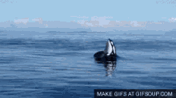

The killer whale or orca (Orcinus orca) is a toothed whale belonging to the oceanic dolphin family, of which it is the largest member. It is recognizable by its black-and-white patterned body. A cosmopolitan species, killer whales can be found in all of the world's oceans in a variety of marine environments, from Arctic and Antarctic regions to tropical seas; they are absent only from the Baltic and Black seas, and some areas of the Arctic Ocean.

Strategies
The arctic wave strategy
this video explains this fascinating strategy that orcas use in the arctic, shoutout to BBC earth for making it
The tail whip strategy
this video shows an expample of an orca launching a seal 80 feet high into the air. if the video doesn't work. just watch it on yt, apologies :(
Abilities
Sonar
the orcas have a bio echolocation sonar system, making them able to send sounds, those sounds travel vast distances and come back with information for the orca, the orca then knows if there is a prey nearby, and also knows it's weight, it's length and several other informations using this fascinating ability
High intelligence
the orcas have a surprisingly high level of intelligence, ranking 4th spot behind dolphins and elephants. this makes them adapt and create new strategies, and also makes them able to cooperate and work with each other as a team